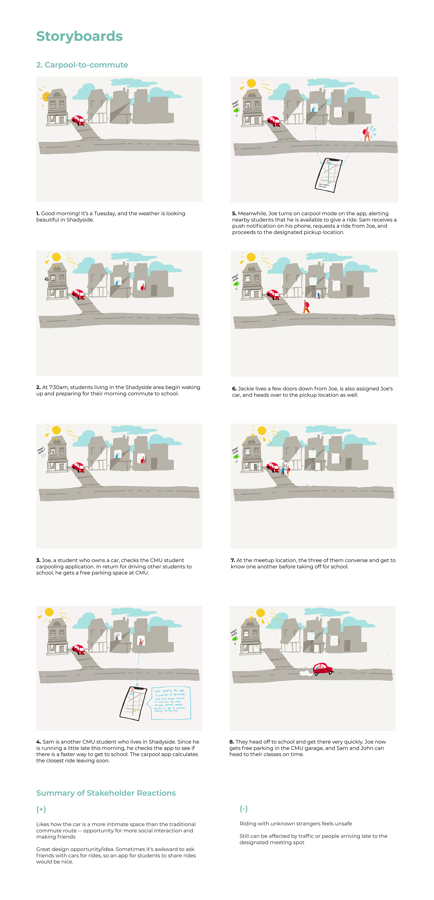

Ideation
Research
role
team
Linda Xia
Marisa Lu
Judy Kong
Marisa Lu
Judy Kong
timeframe
January – May 2018
introduction
The team conducted a semester-long user research project on the following question:
What are opportunities to improve the CMU graduate student commute?
For our project, we decided to focus on understanding how the Carnegie Mellon community gets to and from campus and identifying affordances within the ecosystem for possible interventions.
stakeholder mapping
To understand the current commute situation of grad students, we constructed a stakeholder map of how students and staff get to and from CMU campus. This diagram is based on rudimentary research and general knowledge that we had.
interviews and interpretation
In the next step of our project, we prepared an interview protocol and a list of questions. We interviewed 5 graduate students, asking questions about their commutes and transportation options to better understand their decision making processes.
After the interviews were conducted, the team gathered together to whiteboard sequence diagrams and day-in-the-life models for all of our interviewees to make sense of the data we received.
final models
affinity diagramming
Continuing to use the data from our interviews, we create affinity diagrams to organize data.
model consolidation
storyboards
After the model consolidations, we holistically evaluated all the models and started putting up ideas, questions, etc. onto the whiteboard. We then evaluated some of the ideas with the Rose, Bud, and Thorn exercise. Once we narrowed down to 6 ideas, we began storyboarding the idea and the context in which a graduate student might use it to commute to and from campus.
sample storyboard

Once we finished the storyboards, we took our ideas to graduate students for feedback. Among ourselves, we also evaluated the ideas with the Pluses and Minuses technique.